🌸 Spring Nails
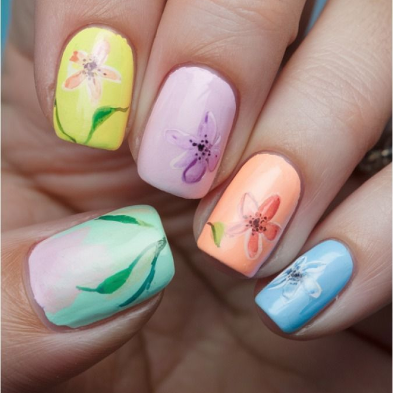
Pastel Bloom: Create a springtime impression with soft pastel nails, offering a gentle and cute look, perfect for those who love elegance and subtlety. 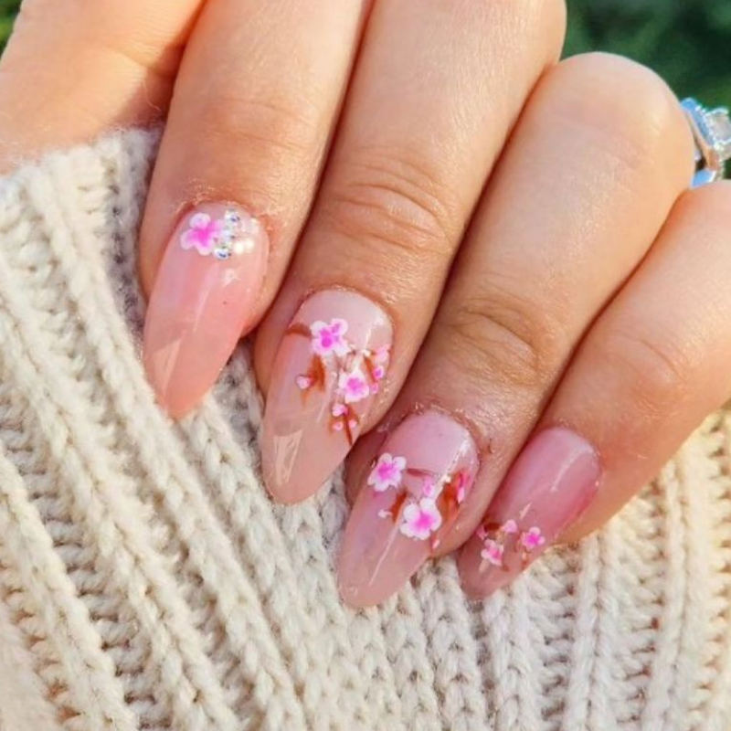
Cherry Blossom Elegance: Nails decorated with cherry blossoms, combined with a delicate nude pink background. This is the perfect choice for special spring occasions. Daisy Delight: A nail design featuring white daisies, bringing a fresh and youthful vibe. Ideal for those who appreciate natural and graceful beauty. 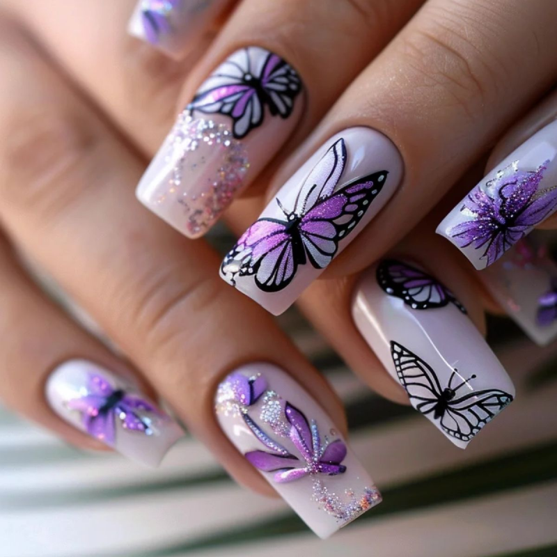
Butterfly Whisper: Butterfly nails gently paired with a pastel ombré, evoking a sense of freedom and freshness like spring. Simple yet elegant! Watercolor Floral: A watercolor effect with beautiful floral designs, adding a romantic and colorful touch to your nails. Perfect for creative souls. Mint & Lavender Love: A combination of mint green and lavender hues, creating a fresh and soft look that captures the gentle atmosphere of spring. 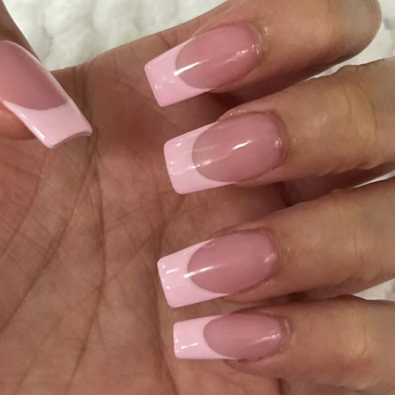
Soft Pink French Tips: A simple yet elegant French tip style with soft pastel pink, highlighting your feminine and graceful beauty. 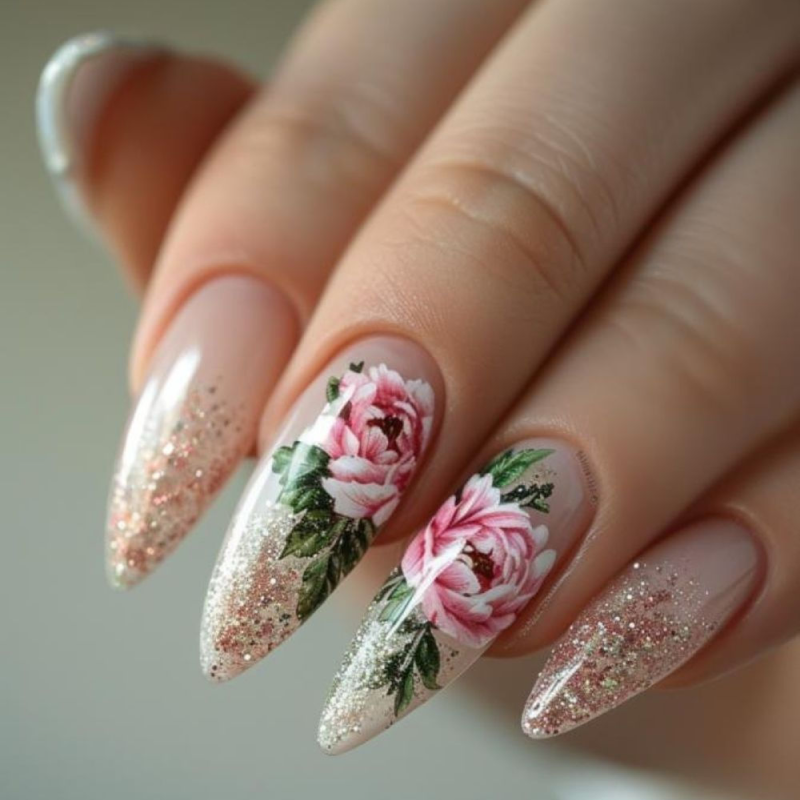
Garden Party Vibes: A nail design with bright floral patterns, bringing the lively atmosphere of spring. Ideal for outdoor gatherings. ☀️ Summer Nails
Neon Glow: With vibrant neon colors, this nail design is the perfect choice for the lively summer, ensuring you shine in any setting. Tropical Sunset: Inspired by tropical sunsets, this nail design with shades of orange, red, and yellow brings warmth and energy to summer. Palm Tree Paradise: Featuring palm tree patterns on green or yellow backgrounds, this is the perfect tropical nail design for sunny and breezy summer vacations. 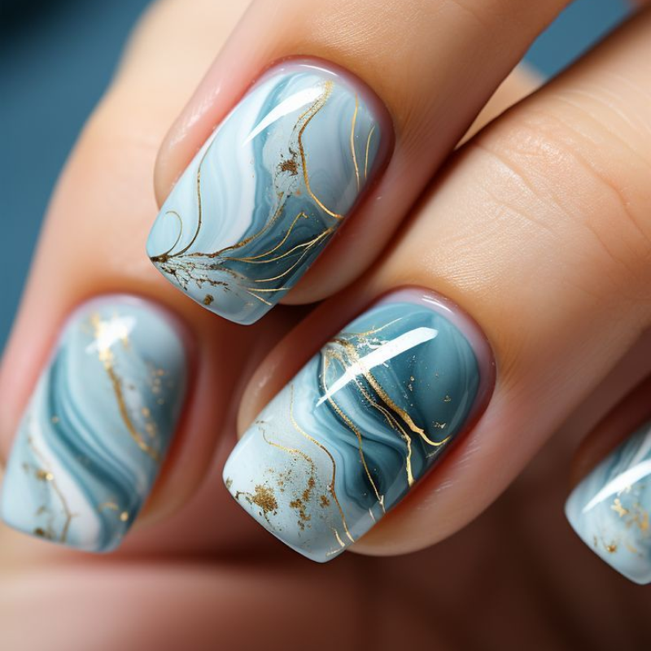
Ocean Wave Magic: Nails with ocean wave effects, offering a relaxing and soothing feeling like summer days at the beach. A must-have for ocean lovers. Watermelon Fun: Nail design with a refreshing watermelon pattern, perfect for hot summer days. The combination of red and green creates a dynamic and fun look. 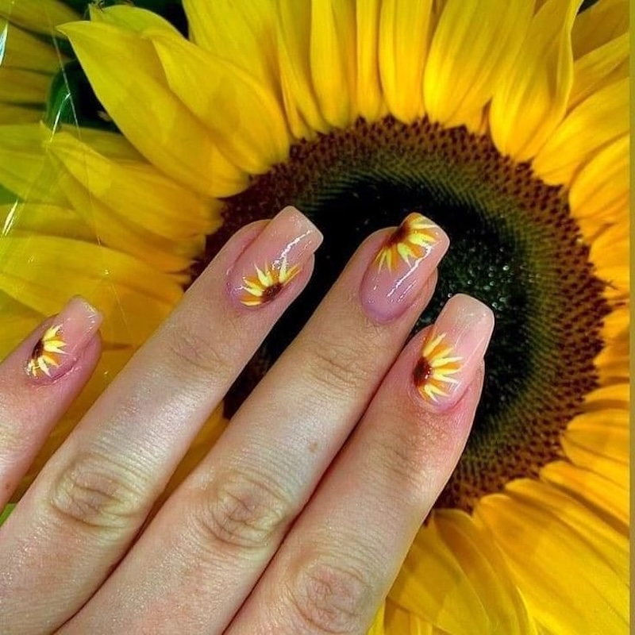
Sunflower Chic: Nails with bright sunflower patterns, bringing warmth and cheerfulness, ideal for summer hangouts with friends. 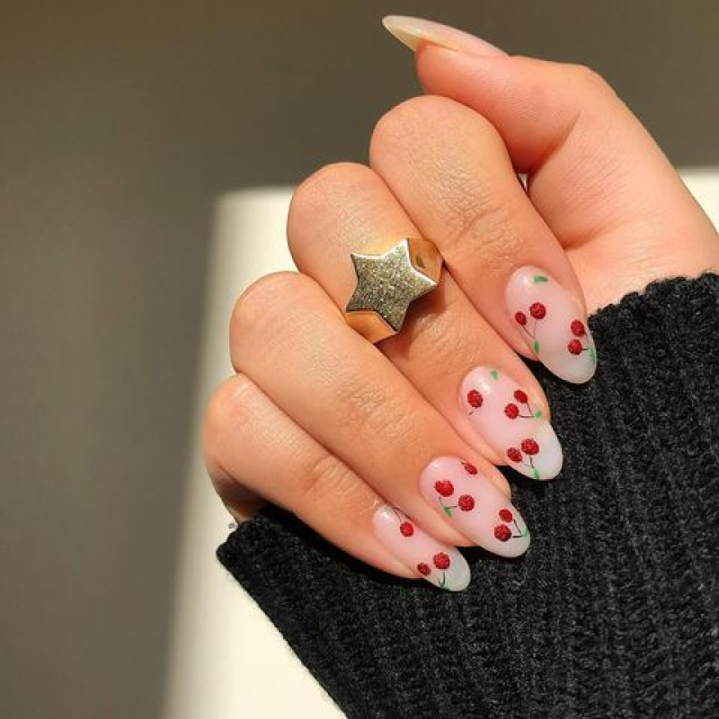
Fruit Splash: Tropical fruit nails with shapes of strawberries, kiwis, and oranges, giving your nails a fresh and lively look. Mermaid Vibes: With fish scale effects and shimmering colors, this nail design is perfect for those who love the mystical and captivating beauty of mermaids. 🍂 Autumn Nails
Pumpkin Spice Love: Warm earthy orange tones inspired by pumpkin lattes, creating a cozy and comforting feeling for autumn. Ideal for cool days. 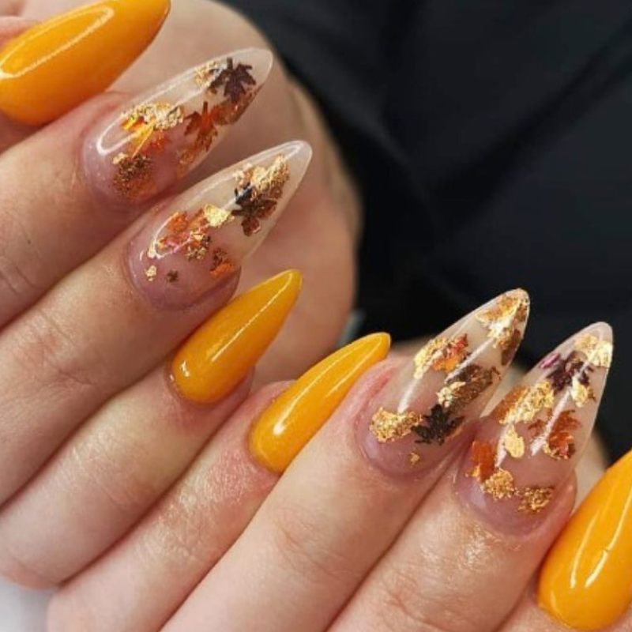
Maple Leaf Charm: Maple leaf patterns typical of autumn, offering a natural, romantic beauty full of the vibrant colors of fall. Sweater Weather: Nails with a knit texture effect, reminiscent of warm autumn sweaters, giving a cozy and comfortable vibe. Burnt Orange Elegance: A blend of burnt orange and earthy brown tones, offering an elegant and sophisticated look, perfect for crisp autumn days. Gold Foil Luxe: Dark nails accented with gold foil, making them shimmer and shine—perfect for special autumn occasions. 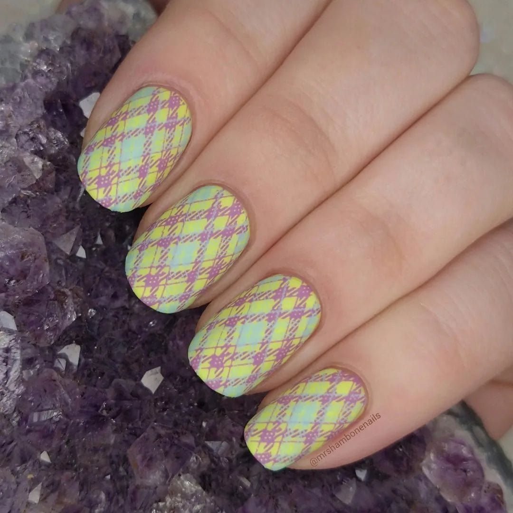
Plaid Perfection: Flannel plaid patterns, a fantastic choice to express your fashionable autumn style. Matte Burgundy Bliss: Elegant matte burgundy, bringing a luxurious and graceful appearance to your nails, ideal for autumn events. Choco Latte: A sweet chocolate brown tone, creating a warm and cozy feeling, perfect for chilly autumn days. ❄️ Winter Nails
Ice Blue Frost: Frosty blue with a sparkling effect, bringing a cold yet alluring vibe for winter. 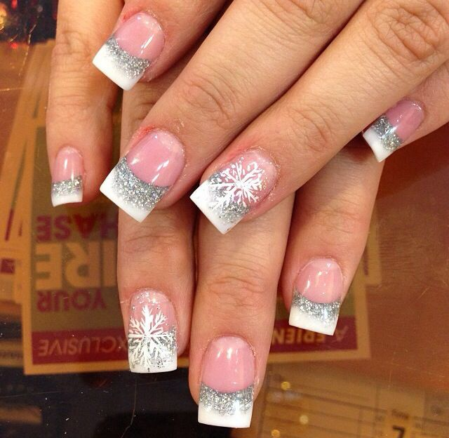
Snowflake Fantasy: White snowflake patterns on navy or white backgrounds, evoking the enchanting atmosphere of Christmas and winter. 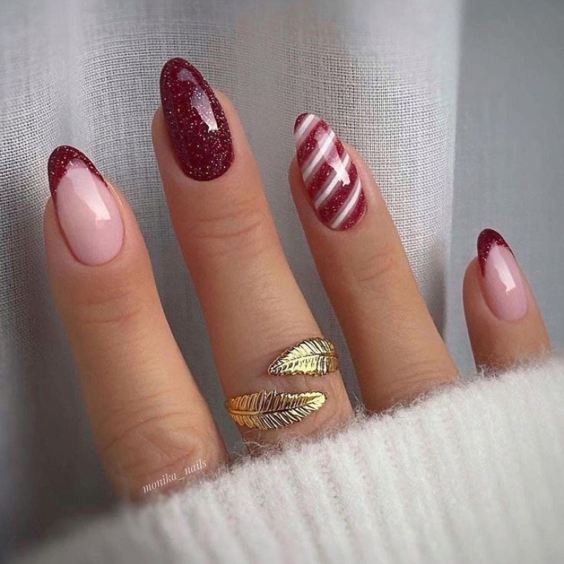
Candy Cane Stripes: Red and white stripes resembling Christmas candy canes, adding a playful and sweet touch to your nails. 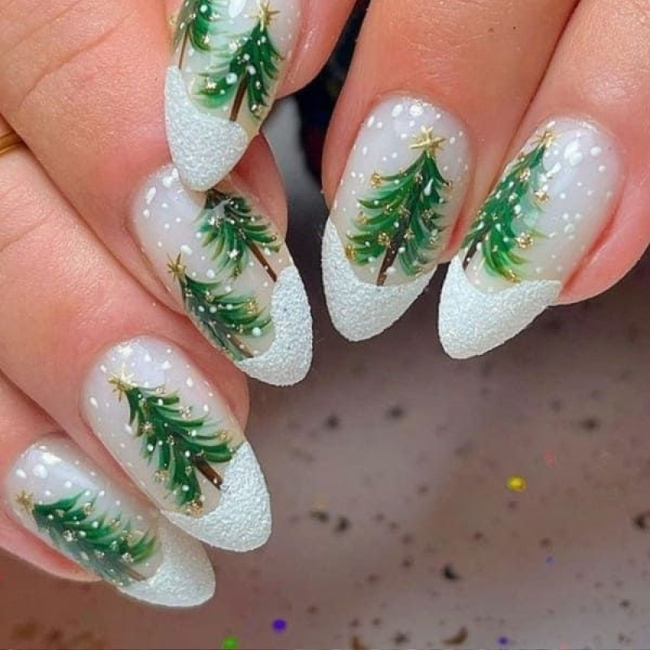
Christmas Tree Chic: Tree and star patterns, essential symbols of the festive season, bringing a joyful Christmas spirit. 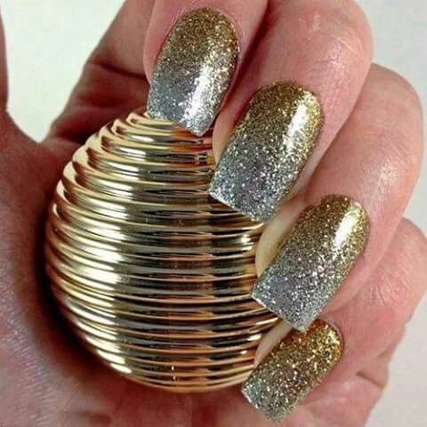
Silver & Gold Glam: A combination of silver and gold, giving a luxurious and glamorous look, perfect for winter parties or special occasions. 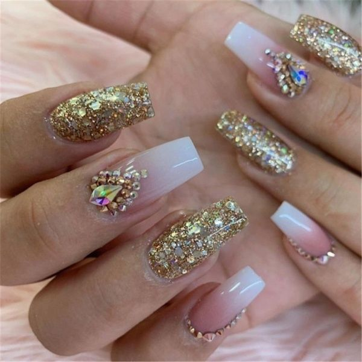
New Year’s Sparkle: With sparkling glitter patterns, this nail design helps you ring in the new year with joy and excitement.